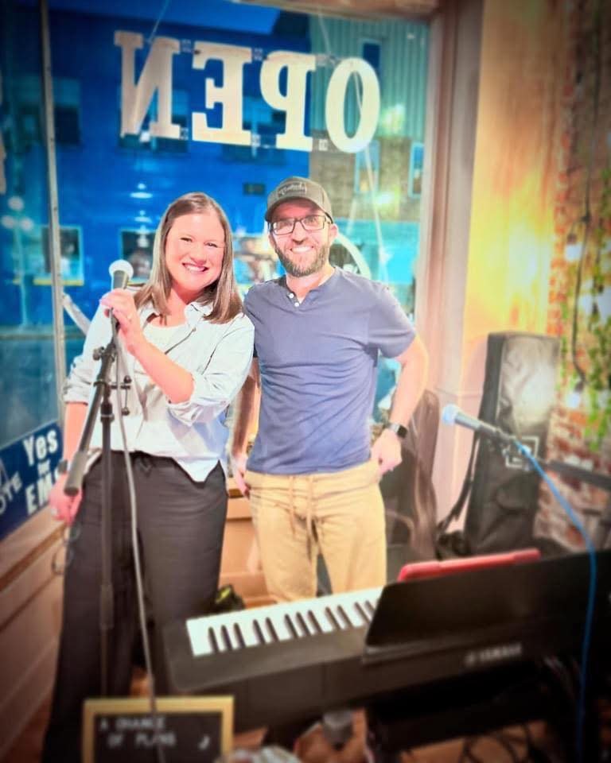

Two Lead Vocalists
Devin and Kendra each bring a distinct vocal style, creating more variety throughout the performance.
A Northwest Ohio live music duo
A Change Of Plans brings piano, guitar, two lead vocalists, and fresh arrangements to weddings, restaurants, churches, festivals, private parties, and community events throughout Northwest Ohio.
Based in Northwest Ohio and available throughout Toledo, Port Clinton, Fremont, Bowling Green, and surrounding areas.

The sound
A Change Of Plans performs recognizable music across multiple decades and genres without sounding like a standard cover band. Songs are thoughtfully arranged around piano, guitar, and two distinct lead vocalists to fit the room, the audience, and the event.
Why choose A Change Of Plans
Devin and Kendra each bring a distinct vocal style, creating more variety throughout the performance.
Instrument changes help create a more dynamic set than a typical acoustic duo.
The setlist focuses on songs audiences recognize, remember, and enjoy singing along with.
Songs are adapted to serve the performance rather than simply copied note-for-note.
The duo brings an organized, modern sound system appropriate for intimate rooms, outdoor events, and larger gatherings.
The performance can support conversation at dinner or create more energy for festivals and community concerts.
Meet the duo
Vocals, piano, and guitar
Devin builds each arrangement around the needs of the song and the event, moving between piano and guitar to give the performance variety. His musical approach emphasizes recognizable songs, strong vocals, and arrangements that feel familiar without being predictable.
Featured lead vocalist
Kendra brings a strong, expressive vocal presence and serves as a central part of the duo’s live identity. Her range allows A Change Of Plans to cover material across pop, rock, country, and classic favorites while keeping the performance engaging and audience-focused.
Together, Devin and Kendra create a flexible live music experience that can move from quiet dinner music to sing-along favorites, church special music, wedding moments, and energetic community events.
Events
Choose the setting that best matches what you are planning.
Flexible live music for ceremonies, cocktail hours, dinners, celebrations, anniversaries, and private gatherings.
Plan your event →Recognizable music, professional sound, and volume appropriate for the room—from relaxed dinner sets to energetic evening performances.
Explore venue music →A polished, family-friendly performance built around familiar music and audience connection.
Explore event music →Special music, worship support, community concerts, and faith-based programs presented with professionalism and respect for the setting.
Explore church music →Upcoming shows
Public appearances and community dates pulled from the current schedule.
Share your experience
We’d love to hear about your experience. This space will feature real audience and client feedback as it becomes available.
Live moments
Current performance photos, ready to be updated when professional galleries are available.


Pricing preview
For intimate settings and events where one performer is the right fit.
Two lead vocalists with piano and guitar for greater variety throughout the event.
Pricing varies based on performance length, location, production needs, and event type.
Scheduled performances and community appearances
Venue names reflect schedule appearances and do not imply endorsement.